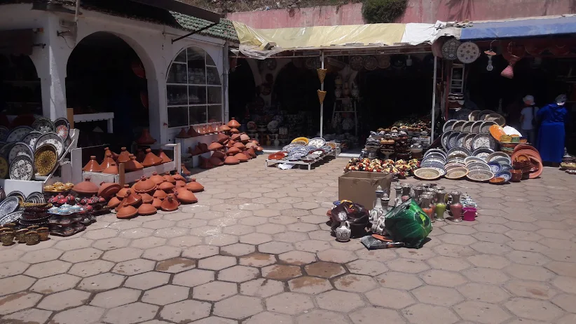
Safi
Morocco's historic ceramics capital on the Atlantic — potters' hill, sea fortresses, medina and coastal cliffs.
Welcome to Safi — Ceramics & Atlantic History
Set between Casablanca and Essaouira on Morocco's Atlantic coast, Safi blends centuries of ceramic craftsmanship with Portuguese coastal fortifications, a lively medina and one of the country's major sardine and fishing ports.
Most landmarks sit relatively close together: start on the Potters' Quarter (Colline des Potiers) and the National Ceramics Museum, walk down through the medina and souks toward the Sea Castle (Dar El Bahr) and Kechla, then head to the port or nearby beaches and Cap Safi.
In Safi
Must-visit places in Safi
All on this page — open a card to jump to its section.
Potters' Quarter (Colline des Potiers)
Traditional clay workshops, kilns and colourful glazed ceramics overlooking the city.
See details ↓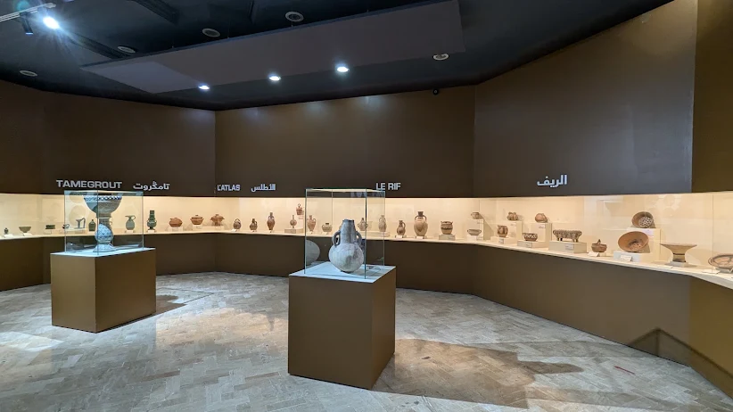
MuseumNational Ceramics Museum
Historic pottery pieces and regional styles showcased on the Potters' Hill.
See details ↓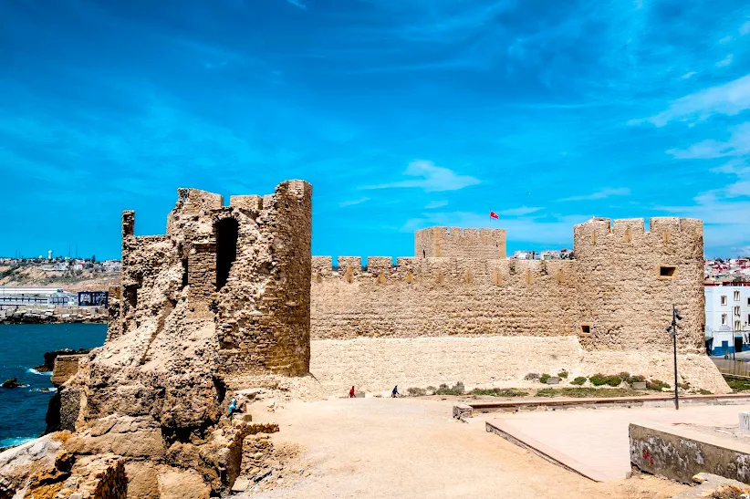
FortressSea Castle (Dar El Bahr)
16th-century Portuguese coastal bastion guarding the ocean approach and harbour.
See details ↓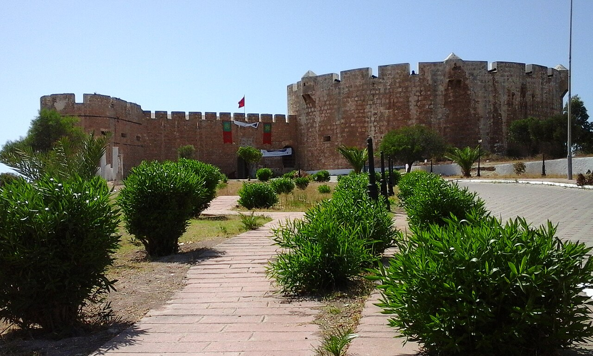
HeritageKechla Fortress & Ramparts
Elevated historic citadel and defensive walls overlooking the old town.
See details ↓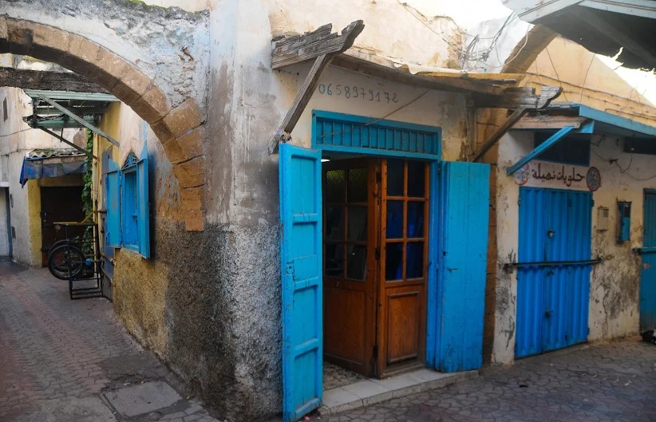
Old TownMedina & Souks
Narrow alleys, neighbourhood shops, spices and everyday local life.
See details ↓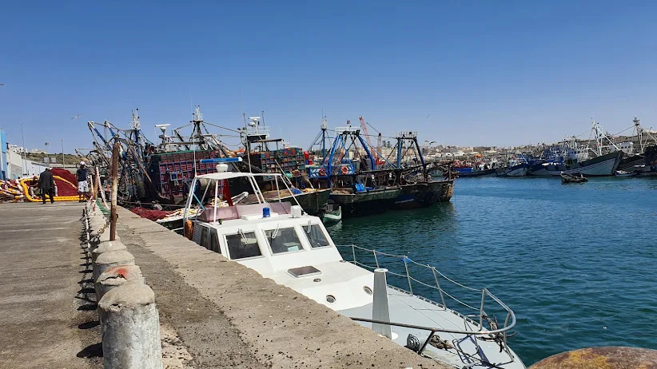
PortFishing Port & Sardine Harbour
Active Atlantic harbour famous for sardine boats, nets and fresh seafood.
See details ↓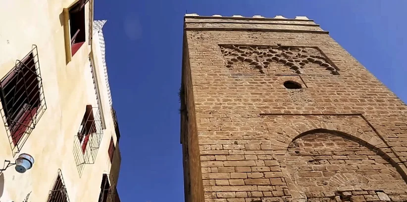
LandmarkGreat Mosque (Grande Mosquée)
Historic sanctuary and minaret at the heart of the old quarter.
See details ↓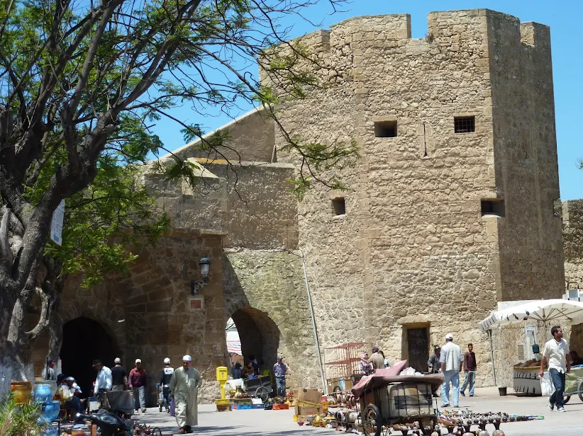
HeritageBab Chaâba & Old Gates
Historic city gate and surrounding bastions linking the medina to town.
See details ↓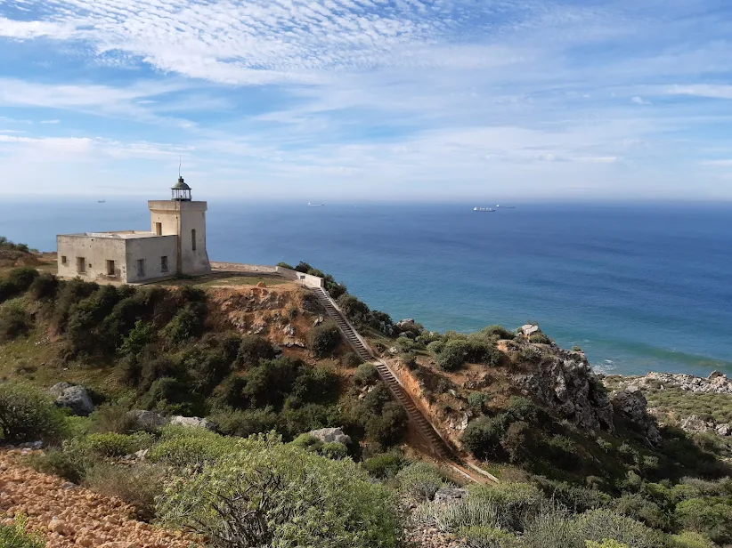
CoastCap Safi & Atlantic Cliffs
Sweeping ocean views, coastal cliffs and breezy sunset viewpoints.
See details ↓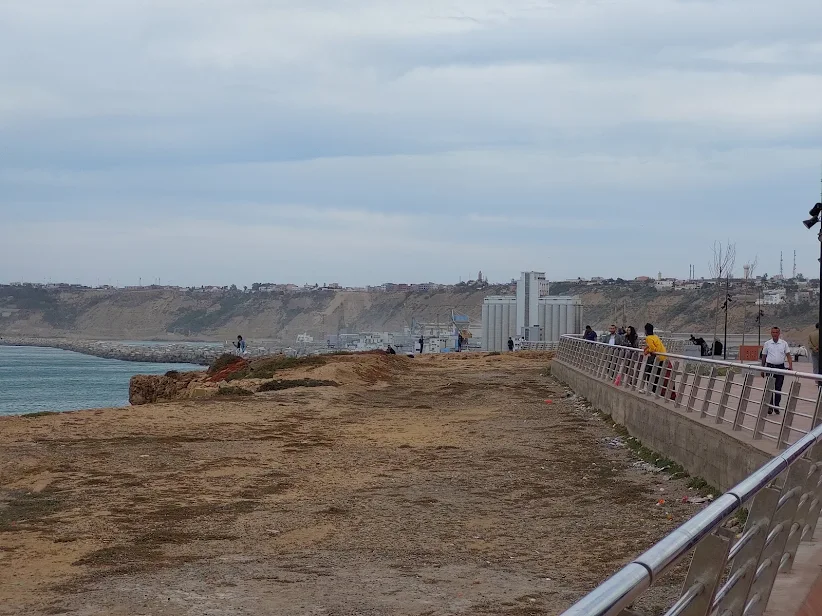
CoastSafi Beach & Corniche
Seafront promenade, cafés and sandy Atlantic stretch for evening walks.
See details ↓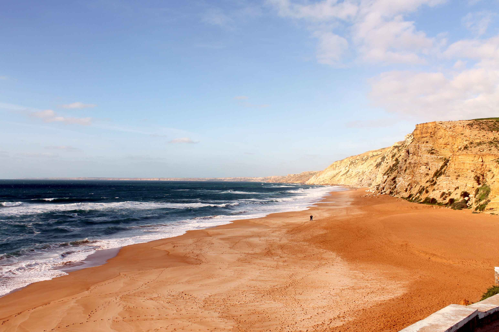
NatureLalla Fatna Beach
Sheltered cove north of Safi known for cliffs, surf and quieter sea views.
See details ↓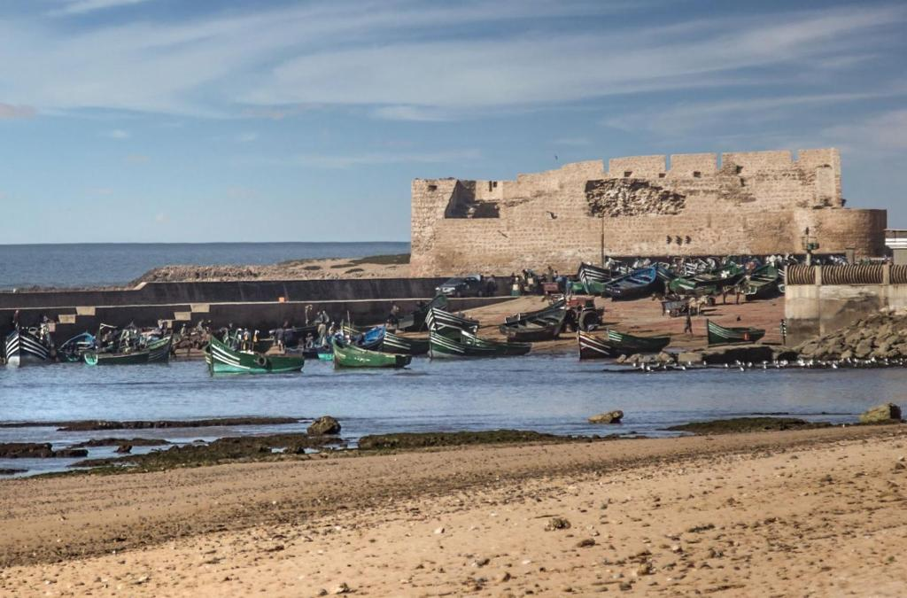
NearbySouira Qdima & Tensift Mouth
Historic ribat, coastal ruins and river-meets-ocean scenery south of Safi.
See details ↓Crafts
Potters' Quarter (Colline des Potiers)
Rising above the city, the Potters' Quarter is the beating heart of Safi's craft identity. Dozens of family workshops shape local clay on the wheel, dry pieces in the sun, paint traditional motifs and fire them in kilns.
Walk through the lanes with time to watch artisans at work and compare glaze patterns directly in the studios and showrooms.
Visit in the morning when workshops are active; check shipping or packing if buying large pieces.
Museum
National Ceramics Museum
Located near the potters' hill, the museum provides helpful context on Safi's pottery traditions, glazes and regional Moroccan ceramic styles before you browse the surrounding workshops.
It is compact and easy to pair with a stroll through the adjacent craft lanes.
Combine with the Potters' Quarter in the same morning circuit.
Fortress
Sea Castle (Dar El Bahr)
Built along the rocky shore during the Portuguese presence in the 16th century, Dar El Bahr stands right above the Atlantic swells and offers broad views over the coast and harbour entrance.
Its stone ramparts and ocean backdrop make it one of Safi's most atmospheric stops for photography and a short coastal walk.
Watch your footing near wet rocks and windy edges along the sea wall.
Heritage
Kechla Fortress & Ramparts
Overlooking the old quarters, the Kechla citadel and historic ramparts reflect Safi's strategic coastal role across centuries of trade and fortification.
Walk around the outer walls to connect the medina with views over the rooftops and Atlantic horizon.
Late afternoon light gives strong relief to the old stone walls.
Old Town
Medina & Souks
Safi's medina feels grounded and everyday rather than purely touristic. Winding lanes connect bakeries, spice stalls, small craftsmen and shaded passages.
Take an unhurried walk through the souks to sample local snacks, pick up ceramics or head down toward the seafront.
Go earlier in the day for bustling market stalls and calmer foot traffic.
Port
Fishing Port & Sardine Harbour
Safi's fishing port is a busy working harbour long known for sardine fishing and seafood activity along the Atlantic coast.
Mending nets, moored boats and fresh catch create a lively maritime scene, especially when vessels come in.
Stay clear of active quays and cranes, and ask before taking close portraits of fishermen.
Landmark
Great Mosque (Grande Mosquée)
Anchoring the historic centre, the Great Mosque and its minaret serve as a familiar reference point while exploring the streets of the old town.
Admire the exterior architecture and surrounding squares as you move between the souks and coastal walls.
Dress modestly around places of worship and avoid blocking entrances at prayer times.
Heritage
Bab Chaâba & Old Gates
Historic gateways like Bab Chaâba mark the transition between Safi's walled quarters and the wider town, recalling how land routes and coastal defences met.
They make natural orientation points when walking between the medina, souks and nearby avenues.
Use the historic gates as easy landmarks for a self-guided walking loop.
Coast
Cap Safi & Atlantic Cliffs
North of the city centre, Cap Safi opens onto rugged Atlantic cliffs, coastal wind and wide ocean horizons away from the dense streets.
It is best reached by car or taxi and rewards visitors looking for coastal scenery and sunset views.
Bring a light windbreaker even on sunny days — Atlantic gusts pick up quickly.
Coast
Safi Beach & Corniche
Safi's seafront promenade and beach area offer a relaxed place to unwind after exploring the medina and workshops, with cafés, ocean air and sunset views.
Sea conditions and currents vary along the Atlantic coast, so check local conditions before entering the water.
Ideal for an early-evening walk along the promenade.
Nature
Lalla Fatna Beach
Situated north of Safi along the coast, Lalla Fatna is a scenic bay framed by cliffs and hills, popular with local beachgoers and surfers looking for a quieter coastal setting.
Because it sits outside the immediate town centre, plan ahead for transport and bring essentials for the day.
Great as a half-day coastal escape if you have a car or arranged taxi.
Nearby
Souira Qdima & Tensift Mouth
South of Safi where the Tensift River meets the Atlantic, Souira Qdima preserves historic coastal fortifications, quiet dunes and an off-the-beaten-path atmosphere.
It pairs naturally with a coastal drive heading south toward Essaouira.
Best visited by car or private driver as an unhurried coastal stop.
Where to stay in Safi
Practical hotels and guesthouses near the centre, corniche or road south — ideal for one or two nights.
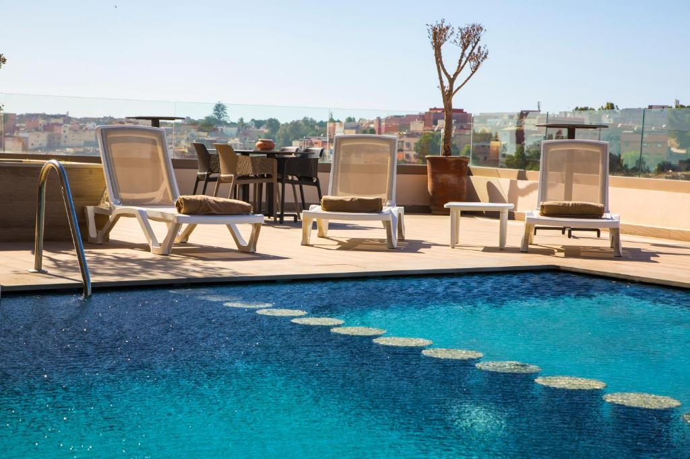
Central Coast
Coast
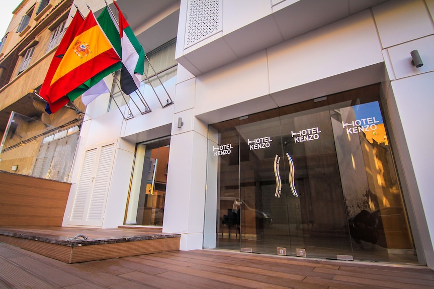
ValuePractical stopover hotel
Straightforward comfort on a coastal route toward Essaouira or El Jadida.
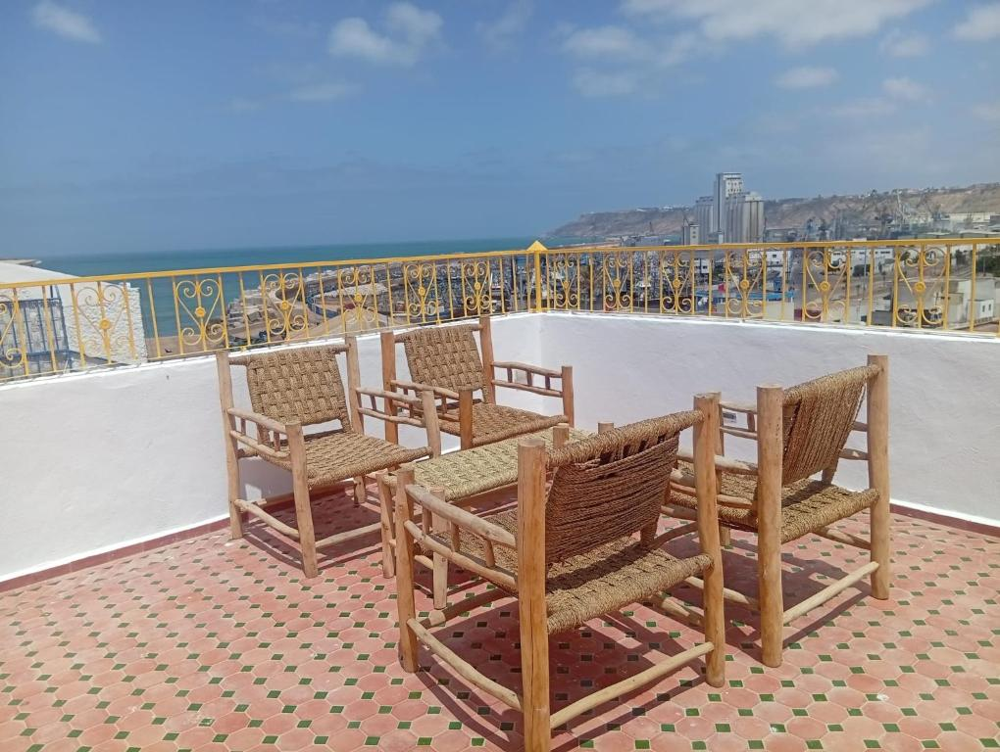
DriverExplore all stays in Safi
Compare live prices, read trusted guest reviews and enjoy free cancellation on most hotels.
✓ Best price guarantee & secure booking
Where to eat in Safi
Grilled sardines, coastal seafood, tagines and neighbourhood cafés.

Grilled sardines & fish
Fresh Atlantic catch and grilled sardines — a signature Safi experience.

Tagines & everyday eateries
Hearty tagines, grills and casual local spots around the old town.
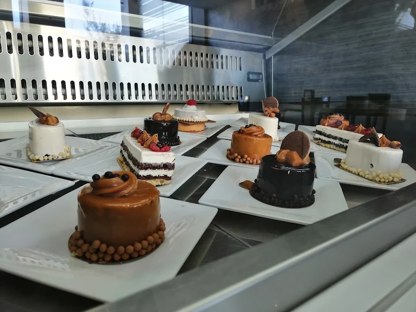
Cafés & pastry stops
Coffee, mint tea and breaks between sightseeing loops.
Practical tips for Safi
Getting around
The medina and nearby seafront are easy on foot; petits taxis cover city hops and a car helps for Cap Safi or coastal beaches.
Buying ceramics
Compare pieces across several workshops on the Potters' Quarter and ask about protective packaging before you travel on.
When to visit
Spring through autumn brings pleasant coastal days; mornings are best for workshops and souks, late afternoons for cliffs and sea views.
Nearby & along the coast
From Safi
Coastal coves, historic stops and Atlantic towns along the route.

Oualidia (≈ 1h)
Sheltered Atlantic lagoon, oyster beds and coastal calm north of Safi.

El Jadida (≈ 1h45)
Portuguese cistern, coastal ramparts and Atlantic seafront north along the coast.

Marrakech (≈ 2h)
Imperial red city inland — souks, historic monuments and vibrant medina life.
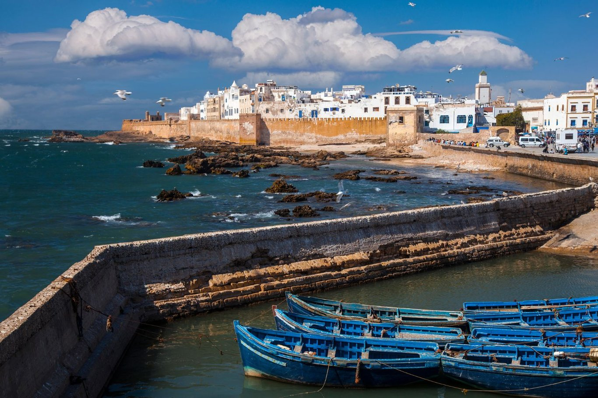
Essaouira (≈ 2h)
Walled coastal town to the south known for its harbour, ramparts and ocean breeze.
Questions about Safi
How long should I spend in Safi?
A full day covers the Potters' Quarter, Ceramics Museum, Sea Castle, Kechla, medina and port; stay one night if you also want Cap Safi or Lalla Fatna at a relaxed pace.
What is Safi best known for?
Safi is renowned across Morocco for its traditional ceramics and pottery workshops on the Colline des Potiers, alongside its Portuguese-era coastal fortifications and busy sardine fishing port.
Can I visit Safi as a stop between cities?
Yes — Safi works well as a stopover or day trip on road itineraries linking Casablanca or El Jadida with Essaouira or Marrakech.
Do I need a car in Safi?
You can explore the medina, Sea Castle, Kechla and potters' hill on foot or by local taxi, while a car makes reaching Cap Safi, Lalla Fatna and Souira Qdima much easier.